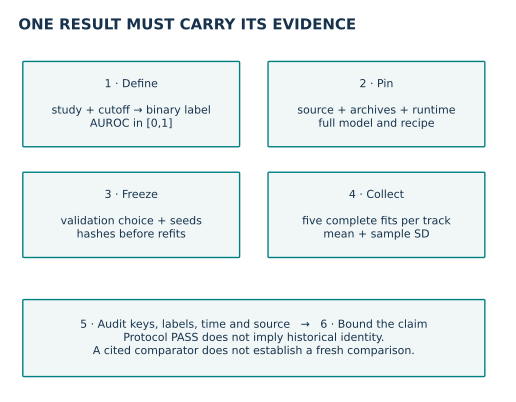
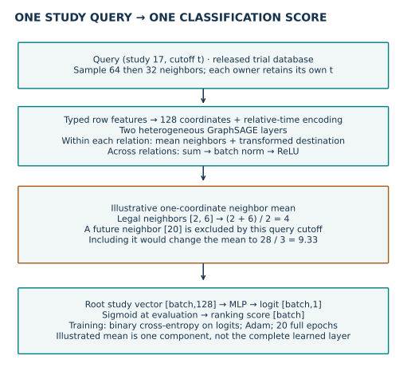
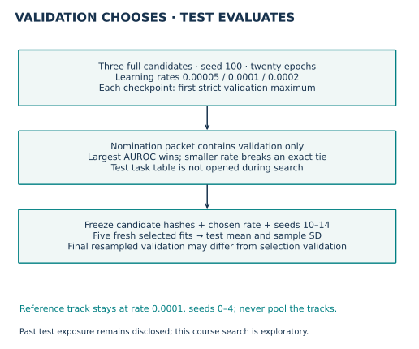
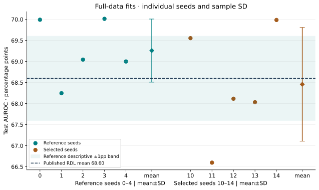

Year 4 · Quarter 4 · Lesson 151
Portfolio entry 1: entity classification
Your tangible win: produce one entity-classification portfolio entry that another researcher can regenerate and challenge. The core reading takes about 15 minutes; the lab and written defense are separate practice.
Lesson 150 separated protocol, score, competition and learner defense. It left a practical question: what must travel with a result when you place it beside two other tasks? This lesson makes that report reusable. Lesson 139 supplies the clinical-trial task; here you own the selection and reporting contract.
Read first: RelBench v1 §5.1, Table 6 and Appendix B.2. Consult the pinned implementation. The named reproduction is the RDL rel-trial/study-outcome entry, not the entire benchmark.
1 · Decide what the entry means¶
Close your notes. Why do five seeds not create five independent datasets? Which split may choose a learning rate? Why does temporal sampling not recover missing feature-arrival dates?
In plain terms. A portfolio entry is a result plus the instructions and evidence needed to interpret it. A score without those attachments cannot support your thesis.
An entity-classification task assigns a binary label to one database entity at a prediction time. Here the entity is a clinical study. A query key is (study_id, cutoff): the same study at another cutoff is another prediction problem. The metric is AUROC, the probability that a random positive receives a higher score than a random negative, with half credit for ties. Higher is better.
Record six things together: task and population; pinned model/data/runtime; selection rule and budget; every seed and summary; verification artifacts; and a claim with its limits. The entry template gives these fields a stable home for Lessons 152–154.
Worked example. Three positive-negative pairs are wins and one is a tie. Their AUROC is (3 + 0.5) / 4 = 0.875. This is a ranking statement, not a statement that predicted probabilities are calibrated. Keep the raw metric in [0,1]; multiply by 100 only for a table labeled percentage points.


2 · Trace what one prediction can know¶
A primary outcome is a study’s designated main measurement. A p-value describes how extreme the observed statistic would be under a specified null model; it is not the probability that a treatment works. A modifier such as > qualifies a reported numeric value.
The released label asks whether a study has a qualifying primary-outcome analysis in (cutoff, cutoff + 365 days], with a minimum numeric p-value at most 0.05. A study must have started by the cutoff. A study with no qualifying analysis is absent from the query population, not automatically negative. The release excludes the > modifier and preserves its numeric treatment of other modifiers. These are benchmark labels, not clinical recommendations. Task source
In plain terms. The label looks forward to define what you are trying to predict. The input must respect what the model could see at the query cutoff.
Architecture vocabulary. A foreign key links a row to an identified row in another table. An encoder converts a row into a learned numerical vector; 128 channels means 128 numbers per row. GraphSAGE updates that vector using neighboring rows, separately for each relation type here. The root is the study being predicted. The diagram’s MLP is a small feed-forward neural network, ReLU replaces negative values with zero, and batch normalization rescales intermediate features using batch statistics during training.
The full pipeline builds row nodes and foreign-key edges, encodes row features, adds relative-time information, samples two temporal neighborhoods, and predicts one logit for each root study. A logit is the unbounded score before the sigmoid maps it into [0,1]. Training uses binary cross-entropy on logits. The notebook shows the row encoder, heterogeneous GraphSAGE operations, root readout and training loop inline.


Read the scalar trace. Legal neighbor values 2 and 6 average to 4. The dated neighbor with value 20 is excluded by this query’s cutoff. This illustrates one aggregation coordinate, not the complete learned layer. A fanout limits how many neighbors are sampled at a hop; Adam updates model weights using gradients, and binary cross-entropy penalizes disagreement with the binary label.
The trial-specific recipe uses two 128-channel layers, mean aggregation within each edge type, summed relation outputs, fanouts 64 then 32, batch size 512, Adam at 0.0001, and 20 epochs. An epoch here traverses all 11,994 training queries. Validation has 960 queries and test has 825. Each sampled timestamp is checked against its owning query cutoff, including when a batch contains different cutoffs. Appendix B.2
Scope check. The released cohort is retrospective, several dates are inferred, and untimestamped metadata lacks historical arrival records. Source preprocessing uses the released snapshot statistics. Passing event-time checks does not establish feature-arrival legality. Fresh preprocessing does not recover the authors' historical random state.
3 · Freeze the selection before test evaluation¶
We run two distinct procedures. The reference track keeps the published trial recipe and seeds 0–4. The selected course track first searches three learning rates using seed 100, then evaluates the chosen rate with seeds 10–14. Each run uses all data and all 20 epochs.
For each fit, the first strict maximum of validation AUROC selects its checkpoint. For the three candidate fits, the highest checkpoint-selection AUROC wins; the lower learning rate breaks an exact tie. Search loads only train and validation task tables. The frozen artifact contains the candidate result hashes, selected rate and future evaluation seeds.
Worked example. Candidate rates A and B both score 0.71 on validation, while C scores 0.70. The smaller rate among A and B wins. A later test score cannot change that choice. The interaction below uses illustrative values; it is not an additional measured experiment.


Lab task 1 — select_candidate. Reject incomplete or test-contaminated candidate packets, then implement the declared choice. Immediate checks include ties, missing candidates and nonfinite values. The full notebook reproduction calls your function when freezing its choice.
| Learning rate | Checkpoint-selection validation AUROC points |
|---|---|
| 5e-05 | 68.045336 |
| 0.0001 | 68.288815 |
| 0.0002 | 68.072588 |
Frozen course choice: 0.0001. Search seed 100 is excluded from both primary means.
The search returned the reference learning rate. Both refit groups therefore use the same model recipe. Their separate seed sets retain distinct reporting roles; a score difference is not a tuning gain.
Final validation is reevaluated with freshly sampled neighborhoods after checkpoint selection. Its score can differ from the score that selected the checkpoint. Preserve both numbers rather than silently substituting one for the other.
Scope check. Earlier lessons already evaluated this test population. The new course search is exploratory despite avoiding test access during this run. Its selected result remains a separate, search-nominated entry. Even if the search returns the reference learning rate, do not relabel or pool the preregistered tracks.
4 · Collect every seed before summarizing¶
In plain terms. A complete experiment includes the inconvenient seed. If you summarize only the outputs that arrived first, you change the experiment after seeing its outcome.
A seed controls stochastic initialization and sampling. Report all five completed seeds, their mean and sample standard deviation, which divides squared deviations by n−1. The reference and selected tracks use different seed sets, so their difference is not a paired causal estimate of the learning-rate change. This spread measures training-run variation on this task. It is not a confidence interval for performance across future databases or future years.
Lab task 2 — summarize_track. Require exactly the five planned unique seeds, the correct track and 20 completed epochs. Reject mixed search and evaluation runs. Calculate mean and sample SD only after those checks.
| Procedure | Validation AUROC points | Test AUROC points | Fixed-recipe score gate |
|---|---|---|---|
| Published RDL | 68.18 ± 0.49 | 68.60 ± 1.01 | Published target |
| Reference, five fresh fits | 67.696425 ± 0.482609 | 69.258775 ± 0.748950 | CLOSE |
| Selected, five fresh fits | 67.789617 ± 0.239938 | 68.457012 ± 1.350223 | INCOMPARABLE |
Mean ± sample SD; the published standard deviation uses the authors’ reporting convention. All primary fits use the full released task.
| Track | Seed | Validation | Test |
|---|---|---|---|
| reference | 0 | 68.374144 | 69.991404 |
| reference | 1 | 67.720996 | 68.246098 |
| reference | 2 | 67.875125 | 69.043987 |
| reference | 3 | 67.416759 | 70.012592 |
| reference | 4 | 67.095100 | 68.999794 |
| selected | 10 | 67.866636 | 69.553715 |
| selected | 11 | 68.034614 | 66.597654 |
| selected | 12 | 67.831343 | 68.115942 |
| selected | 13 | 67.388167 | 68.032400 |
| selected | 14 | 67.827322 | 69.985350 |


The frozen reference tolerance is ±1 AUROC percentage point around the published test mean 68.60. This is a descriptive closeness rule. Passing it is not statistical equivalence or historical identity. The selected course track remains INCOMPARABLE for the preregistered reference gate even if it lands in the numerical band. This reporting boundary does not mean AUROC itself has different units.
5 · Attach verification to the claim¶
Lab task 3 — portfolio_verdict. Separate protocol completeness, fixed-recipe score closeness, historical identity, fresh FE comparison and learner defense. A high score must not fill missing evidence fields.
All 13,779 labels were independently reconstructed and compared with released SQL. All 20,730 saved predictions across ten primary fits and three validation-only candidates were aligned to archive query keys and rescored. The sampler audited 3,388,770 query occurrences with zero future-timestamp violations. Six load-bearing source definitions match the pinned implementation; each fit also passed a real-batch original-model comparison.
First-training-batch nonfinite-gradient counts range from 256 to 256 across runs. A separate source differential at seed0’s selected checkpoint checked 813 gradient tensors, matching 256 nonfinite entries, with maximum finite-entry difference 8.38e-09. These observations must travel with the result: source agreement is not evidence of gradient health.
The notebook independently aligns every saved prediction by query key, recomputes AUROC using rank concordance, checks it against the official evaluation, and feeds the results through your live functions. This default path audits author-reference evidence. The post-EXIT full gate performs fresh training and exports a separate own-run report. The two paths never share an ownership label.
The paper reports a raw entity-table LightGBM baseline of 70.09 ± 1.41 test AUROC points for this task. That cited result is useful counter-evidence; it is not a freshly trained comparator in this lesson and it is not a manual relational-FE experiment. Table 6
Scope check. This entry establishes what ran and what was measured. It does not establish that RDL beats manual feature engineering, reproduces every paper task, or has been mastered by the learner. Those claims need their own evidence.
6 · Export and defend entry 1¶
Open the student notebook, prepared notebook, reference sheet, and reproduction protocol. Start with the default CPU evidence audit; the full GPU gate uses the pinned runtime and substantial host memory. Review its cost before enabling it.
EXIT. Export l151-portfolio-entry.json and write 250–400 words answering: what population is predicted; how selection avoids this run's test data; what five-seed variation means; what the source/temporal checks establish; and which thesis claim still lacks evidence. Name one falsifiable follow-up. Ask the teaching agent to review any unclear step and your final defense.
The proposed review rubric gives 0–2 points each for query/metric correctness, selection discipline, complete evidence, interpretation, and reproducibility. Readiness requires at least 8/10 with no zero, reviewed by the teaching agent. Author execution leaves learner status PENDING_WRITTEN_DEFENSE.
Spaced return. Tomorrow, reconstruct the six entry fields without opening the template. In one week, explain why a close tuned score is not fixed-protocol reproduction. Lesson 152 will reuse the entry format for regression; Lesson 154 will combine tasks without hiding weak results.